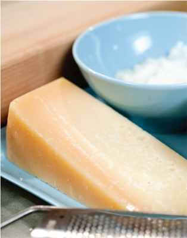

Good, fast, fuss-free cooking is all about the equipment you use. You don’t have to spend a fortune or clutter your work surfaces with appliances—we’re talking about a few choice pieces that will make your food lighter and your life easier. Here are CYT faves.

Beautiful plates—What’s the point of great-looking food on dull, chipped plates?
Blender—You won’t need this and a food processor and a handheld blender unless you’re an avid cook (with a big kitchen), but a coun-tertop blender is great if you often make smoothies and soups in large quantities. A glass container is a better investment than plastic. It comes in handy for cocktails, too!
Immersion or stick blender—This is handy for smaller quantities, such as making a soup or smoothie for one or two. It’s portable, doesn’t take up much room, and is easy to clean.
Hand mixer—Like a handheld blender, this is portable, easy-to-clean, and saves aching arms if you’re whisking egg whites or making a cake.
Standing mixer—If you love to bake, you can’t live without this workhorse!
Food processor—If you have room, leave this out on your kitchen coun tertop permanently and you’ll use it more often. Once you realize what a time-and labor-saver this is, you’ll fall in love. In addition to blending, puréeing and whisking, you’ll use it for cakes, making breadcrumbs, and whipping up toppings and spreads.
Ridged griddle or grill pan—For grilling meat, fish, and veggies, this is low-or no-fat fast cooking with an extra smoky flavor. Those barbeque-style griddle marks make you feel like summer is with you all year round.
Paper towels—They’re good for blotting grease off food after cooking.
Metal tongs—It’s the easiest way to turn food on the grill or in the pan, and to transfer food to plates.
Microplane grater—A kitchen must-have, this makes lightning quick work of citrus zest, ginger, garlic, and cheese. A little goes a long way, so you’ll be able to cut down on the amount of cheese you use without noticing.
Good-quality pans—Use two or three saucepans with thick, sturdy bases, tall sides, stay-cool handles, and well-fitting lids. Make sure to have a large, heavy-based, nonstick sauté pan that can be used for searing/flash-frying, and a casserole dish. Stainless steel looks stylish, wears well, and is easy to clean.
Omelet pan—It’s perfect for quick meals for one or for toasting nuts. Buy nonstick and you won’t need oil.
Pastry brush—It’s good for lightly oiling food before cooking.
Pepper grinder
Plastic containers—You’ll need airtight ones for storing leftovers or for when you’re super-organized and make food in batches to freeze for future meals.
Nonstick roasting pan—Buy one with a sturdy base.
Sharp knives—Even just one super-sharp, high-quality knife is an investment you won’t regret.
Spatula—It gets the food to where it needs to be.
Steamer—This is an absolute kitchen essential. Some saucepans come with a steamer that fits on top or you can buy a universal steaming basket that fits into the pan.
Large wok with a lid—If you care for your wok and season it after every use, you’ll hardly need any oil. Wok lids are useful when steaming veggies.
Wooden cutting board—It lasts longer than plastic.
Wooden spoons—Perfect for nonstick pans, combining ingredients, and is an all around great tool.
And the Won’t-Miss-’Em Items?
If you have any of the following, save space by donating them to a thrift store. Life’s too short to use a:
• Blunt knife
• Deep-fat fryer
• Egg poacher
• Electric juicer
• Pasta maker
• Pressure cooker
• Sandwich press
• Yogurt maker